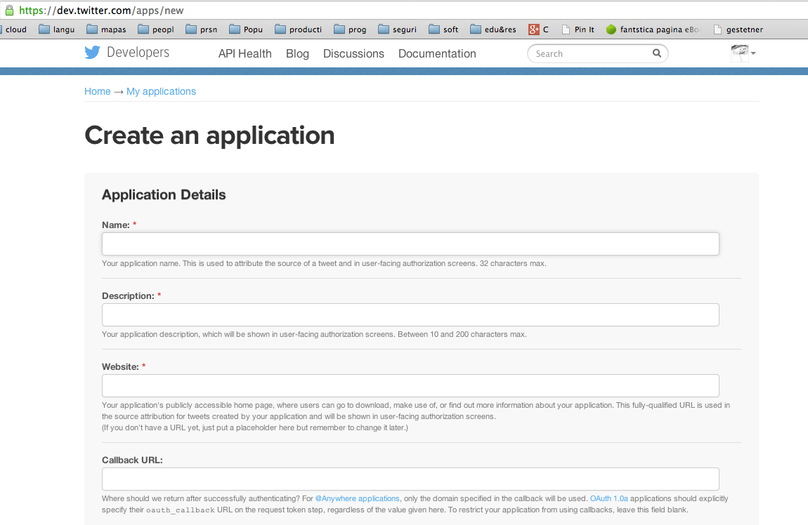
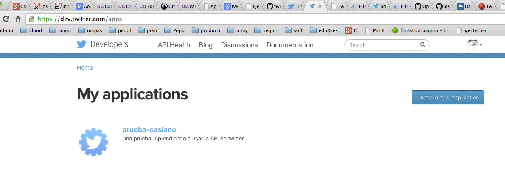

Siguiente: Práctica: Contar la Popularidad Subir: Introduccion Anterior: Ejercicios Índice General Índice de Materias
Puede encontrar una copia de este proyecto/ejercicio en:
[~/src/ruby/rubytesting/twitter/twitter-test(master)]$ git remote -v bb ssh://git@bitbucket.org/casiano/twitter-test.git (fetch) bb ssh://git@bitbucket.org/casiano/twitter-test.git (push) origin git@github.com:crguezl/twitter-test.git (fetch) origin git@github.com:crguezl/twitter-test.git (push)
[~/src/ruby/rubytesting/twitter/twitter-test(master)]$ pwd -P /Users/casiano/local/src/ruby/rubytesting/twitter/twitter-test [~/src/ruby/rubytesting/twitter/twitter-test(master)]$ date martes, 2 de septiembre de 2014, 12:44:00 WEST
[~/src/ruby/rubytesting/twitter/twitter-test(master)]$ cat README.md Testing twitter ============== See: * http://sferik.github.io/twitter/ * Register your application in twitter: https://dev.twitter.com/apps/new * http://www.vogella.com/articles/Git/article.html Once you have registered your application in twitter fill `configure.rb.template` with your [Oauth](http://blog.varonis.com/introduction-to-oauth/) data and rename it to `configure.rb`Para saber más del formato Markdown:
Usaremos Ruby Version Manager ( rvm ) para gestionar las diferentes versiones del intérprete ruby que mantendremos instaladas.
[~/src/ruby/rubytesting/twitter/twitter-test(master)]$ rvm list rvm rubies jruby-1.7.3 [ x86_64 ] opal [ x86_64 ] rbx-head [ x86_64 ] ruby-1.8.7-p352 [ i686 ] ruby-1.9.3-head [ x86_64 ] ruby-1.9.3-p392 [ x86_64 ] ruby-1.9.3-p545 [ x86_64 ] ruby-2.0.0-p353 [ x86_64 ] ruby-2.0.0-p451 [ x86_64 ] ruby-2.1.1 [ x86_64 ] =* ruby-2.1.2 [ x86_64 ] # => - current # =* - current && default # * - defaultVea la sección 81 para saber mas de rvm .
El intérprete Ruby que estoy usando es:
[~/src/ruby/rubytesting/twitter/twitter-test(master)]$ ruby -v ruby 2.1.2p95 (2014-05-08 revision 45877) [x86_64-darwin13.0]En el directorio actual existe un fichero
.ruby-version que controla
la versión de Ruby con la que trabajaré en este directorio:
[~/src/ruby/rubytesting/twitter/twitter-test(master)]$ ls -la total 72 drwxr-xr-x 12 casiano staff 408 2 sep 13:29 . drwxr-xr-x 5 casiano staff 170 18 sep 2013 .. drwxr-xr-x 14 casiano staff 476 2 sep 13:11 .git -rw-r--r-- 1 casiano staff 26 23 sep 2013 .gitignore -rw-r--r-- 1 casiano staff 6 2 sep 13:03 .ruby-version -rw-r--r-- 1 casiano staff 45 23 sep 2013 Gemfile -rw-r--r-- 1 casiano staff 319 17 sep 2013 Gemfile.lock -rw-r--r-- 1 casiano staff 398 2 sep 13:10 README.md -rw-r--r-- 1 casiano staff 213 25 sep 2013 Rakefile -rw-r--r-- 1 casiano staff 318 25 sep 2013 configure.rb -rw-r--r-- 1 casiano staff 250 17 sep 2013 configure.rb.template -rw-r--r-- 1 casiano staff 558 25 sep 2013 twitt.rbEl contenido de dicho fichero es la versión de Ruby que será usada cada vez que se entra en ese directorio:
[~/src/ruby/rubytesting/twitter/twitter-test(master)]$ cat .ruby-version 2.1.2Antes de ejecutar nuestro programa instalamos las librerías que son necesarias para su funcionamiento. Las librerías en Ruby se denominan gemas:
[~/src/ruby/rubytesting/twitter/twitter-test(master)]$ bundle install Fetching gem metadata from https://rubygems.org/......... Installing multipart-post 1.2.0 Installing faraday 0.8.8 Installing multi_json 1.8.0 Installing simple_oauth 0.2.0 Installing twitter 4.8.1 Using bundler 1.6.2 Your bundle is complete! Use `bundle show [gemname]` to see where a bundled gem is installed.Ahora podemos proceder a ejecutar el programa:
[~/src/ruby/rubytesting/twitter/twitter-test(master)]$ ruby twitt.rb Username : timoreilly Name : Tim O'Reilly Followers : 1791686 Friends : 1238 Location : Sebastopol, CA URL : http://t.co/5086iX7oyT Verified : true Tweet text : @matunos @jamesoreilly @TheEconomist True enough. Tweet time : 2014-09-02 04:39:14 +0100 Tweet ID : 506647513076482049
Con este fichero determinamos con que versión del intérprete Ruby se trabaja en este proyecto (Véase la sección 81.7):
[~/src/ruby/rubytesting/twitter/twitter-test(master)]$ cat .ruby-version 2.1.2
El fichero Gemfile es usado en conjunción con Bundler para informar de que librerías o gemas depende nuestra aplicación (véase 89):
[~/local/src/ruby/rubytesting/twitter(master)]$ cat Gemfile source 'https://rubygems.org' gem 'faraday', '0.8.7' gem 'twitter'
El comando bundle install instala las gemas que figuran en el Gemfile
y sus dependencias:
[~/local/src/ruby/rubytesting/twitter(master)]$ bundle install ERROR: Gem bundler is not installed, run `gem install bundler` first.Si Bundler no esta instalado como en este ejemplo, procederemos a instalarlo mediante el comando
gem.
(Véase la sección 83 para saber mas):
[~/local/src/ruby/rubytesting/twitter(master)]$ gem install bundler Fetching: bundler-1.3.5.gem (100%) Successfully installed bundler-1.3.5 1 gem installedAhora si, instalamos las gemas con
bundle install
(véase 89):
[~/local/src/ruby/rubytesting/twitter(master)]$ bundle install Fetching gem metadata from https://rubygems.org/......... Fetching gem metadata from https://rubygems.org/.. Installing multipart-post (1.2.0) Installing faraday (0.8.7) Installing multi_json (1.8.0) Installing simple_oauth (0.2.0) Installing twitter (4.8.1) Using bundler (1.3.5) Your bundle is complete! Use `bundle show [gemname]` to see where a bundled gem is installed. [~/local/src/ruby/rubytesting/twitter(master)]$
La opción -a de gem search muestra todas las versiones que existen de una gema:
[~/src/ruby/rubytesting/twitter/twitter-test(master)]$ gem search '^farad.y$' -r -a *** REMOTE GEMS *** faraday (0.9.0, 0.8.9, 0.8.8, 0.8.7, 0.8.6, 0.8.5, 0.8.4, 0.8.2, 0.8.1, 0.8.0, 0.7.6, 0.7.5, 0.7.4, 0.7.3, 0.7.2, 0.7.1, 0.7.0, 0.6.1, 0.6.0, 0.5.7, 0.5.6, 0.5.5, 0.5.4, 0.5.3, 0.5.2, 0.5.1, 0.5.0, 0.4.6, 0.4.5, 0.4.4, 0.4.3, 0.4.2, 0.4.1, 0.4.0, 0.3.1, 0.3.0, 0.2.4, 0.2.3, 0.2.2, 0.2.1, 0.2.0, 0.1.2, 0.1.1, 0.1.0, 0.0.2, 0.0.1)
[~/local/src/ruby/rubytesting/twitter(master)]$ tree . |--- Gemfile |--- Gemfile.lock |--- README.md |--- configure.rb `--- twitt.rb 0 directories, 6 files
[~/src/ruby/rubytesting/twitter/twitter-test(master)]$ cat twitt.rb
require 'twitter'
require './configure'
screen_name = ARGV[0] || 'timoreilly'
client = my_twitter_client()
a_user = client.user(screen_name)
puts <<"EOS"
Username : #{a_user.screen_name}
Name : #{a_user.name}
Followers : #{a_user.followers_count}
Friends : #{a_user.friends_count}
Location : #{a_user.location}
URL : #{a_user.url ? a_user.url : ""}
Verified : #{a_user.verified}
EOS
tweet = client.user_timeline(screen_name).first
if tweet
puts "Tweet text : #{tweet.text }"
puts "Tweet time : #{tweet.created_at}"
puts "Tweet ID : #{tweet.id}"
end
Algunos métodos de la API de Twitter requieren que estemos autenticados (log in), mientras que otros están disponibles sin login. Existen dos formas de autenticarse con la API de Twitter:
OAuth es un protocolo que no requiere que el usuario le de a las aplicaciones sus passwords (de Twitter o del proveedor del servicio).
Mediante OAuth el usuario le da a tu aplicación permiso para interactuar con su cuenta de Twitter. Twitter nos da un token con el que autenticarnos y nos evita tener que preguntar o que manejar las passwords de los usuarios.
Mas formalmente, Oauth es un estandard abierto para autorización. OAuth proporciona un método para que los clientes accedan a los recursos del servidor en nombre de un propietario del recurso (como un usuario final).
También proporciona un proceso para los usuarios finales para autorizar acceso a terceras partes a sus recursos en el servidor sin que haya necesidad de compartir credenciales (el username y password típicos), utilizando redirecciones mediantes agentes.
En otras palabras, OAuth
permite a un usuario del sitio A compartir
su información en el sitio A (proveedor de servicio) con el sitio
B (llamado consumidor) sin compartir toda su identidad.
Una aplicación puede solicitar acceso de lectura o escritura a nuestra cuenta Twitter. Cuando le damos permiso a una aplicación, la aplicación es listada en nuestro Twitter en https://twitter.com/account/connections. En esta página tenemos la posibilidad de revocar el acceso a las aplicaciones a las que le hemos dado permiso en el pasado.
Para usar OAuth , es necesario registrar nuestra aplicación en twitter visitando el enlace https://dev.twitter.com/apps/new.

Una vez rellenado el formulario (deja vacío el campo Callback URL. Véase por ejemplo OAuth 1.0 for Web Applications en Google) Twitter nos asigna:
Otra cosa es que una vez registrada nuestra aplicación en Twitter desde una cuenta autorizada, el tweet contiene el nombre de nuestra aplicación y el enlace a nuestro sitio Web.

A continuación generamos el token y con ello tenemos los datos para rellenar en el bloque:
client = Twitter::REST::Client.new do |config| config.consumer_key = YOUR_CONSUMER_KEY config.consumer_secret = YOUR_CONSUMER_SECRET config.access_token = YOUR_OAUTH_TOKEN config.access_token_secret = YOUR_OAUTH_TOKEN_SECRET end
Véase la sección 93 OAuth en estos apuntes para saber mas sobre OAuth .
Copia y pega tus datos OAuth :
[~/src/ruby/rubytesting/twitter/twitter-test(master)]$ cat configure.rb
def my_twitter_client
Twitter::REST::Client.new do |config|
config.consumer_key = '******************'
config.consumer_secret = '******************'
config.access_token = '******************'
config.access_token_secret = '******************'
end
end